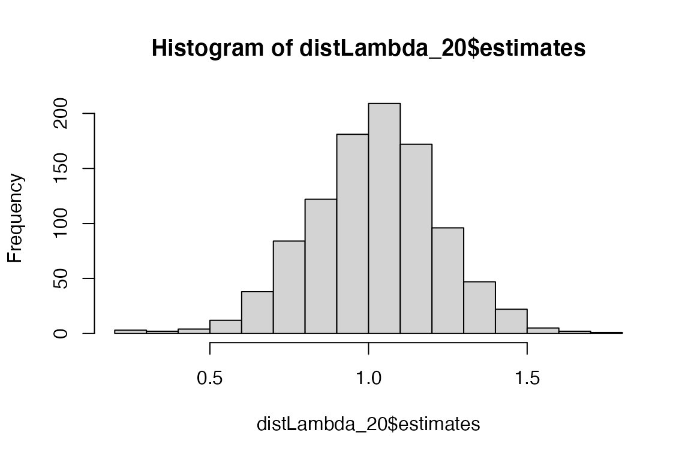
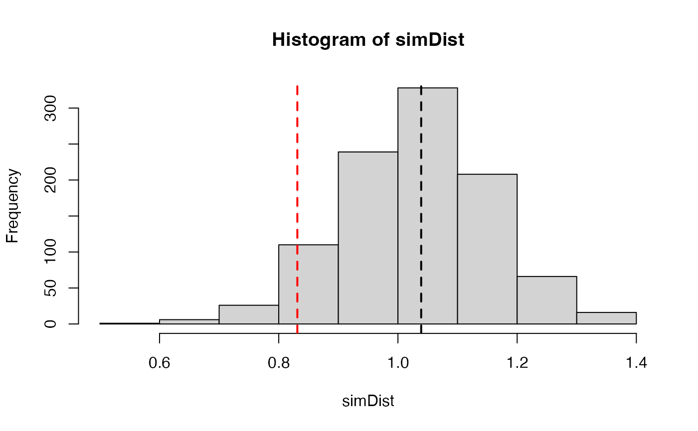
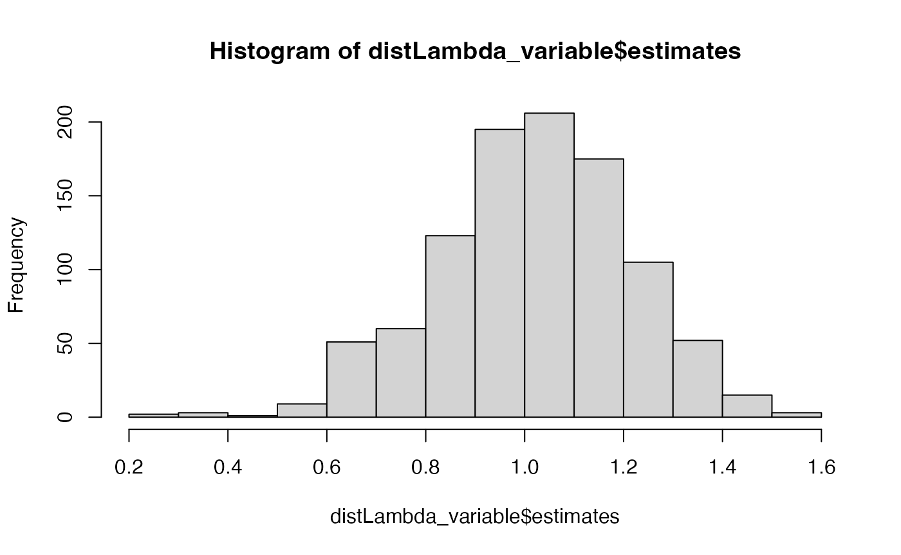
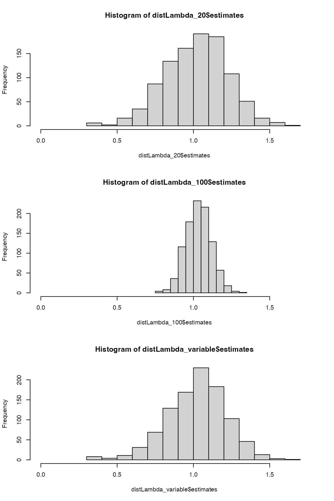

Introduction
Uncertainty in the individual matrix elements of a matrix population model can lead to sampling errors, which propagate and affect the accuracy of estimates of MPM-derived metrics. These metrics include population growth rate, generation time, reactivity and many others.
One way to estimate this uncertainty is by using bootstrapping approach whereby a sampling distribution of the matrix model is generated, based on assumptions about the underlying processes in the matrix model and the uncertainties in the individual matrix elements. For example, we can assume that the fertility component of the matrix is the mean of multiple Poisson processes, and that survival can be modelled as a binomial process.
The compute_ci() function allows users to estimate a 95%
confidence interval for any metric that can be derived from a matrix
population model (A). This function generates a
sampling distribution by resampling based on the above assumptions and
calculates the posterior distribution of the metric of interest. The
lower and upper bounds of the 95% CI are then estimated from this
distribution. The width of the CI reflects the precision of the
estimate; a narrower CI indicates greater precision, while a wider CI
indicates less precision.
Various factors can influence the width and shape of the CI, such as
the sample size used to estimate the individual matrix elements, the
structure of the matrix model, the underlying assumptions made by the
compute_ci() function, and the distribution of
uncertainties in the individual matrix elements. It is crucial to
consider these factors when interpreting the results of a matrix
population model and assessing the precision of the resulting
estimates.
Estimate 95% CI of lambda
We could estimate the 95% CI of any metric that can be calculated from a matrix model. In this example we focus on population growth rate, lambda. Let’s consider a matrix model A that is composed of submatrices U and F. We need a “split” A matrix because the underlying processes are governed by distributions with different statistical properties. It is assumed that individual’s survival is binary (0 = dies, 1 = survives) while an individual’s reproduction is assumed to to be a Poisson process.
In this example, the matrix is simple, and it is only the top right element that represents reproduction, while the other elements all represent survival and/or growth.
\[ \mathbf{A} = \begin{bmatrix} 0.1 & 3.0 \\ 0.2 & 0.4 \ \end{bmatrix} \]
Thus:
matU <- matrix(c(
0.1, 0.0,
0.2, 0.4
), byrow = TRUE, nrow = 2)
matF <- matrix(c(
0.0, 3.0,
0.0, 0.0
), byrow = TRUE, nrow = 2)If we know that the sample size used to estimate each element of the
matrix was 20 individuals, we can estimate the downstream
95% confidence intervals for, say lambda, as follows:
compute_ci(mat_U = matU, mat_F = matF, sample_size = 20,
FUN = popdemo::eigs, what = "lambda")
#> 2.5% 97.5%
#> 0.5910687 1.3902029Note that it is not necessary to use the same sample size for each element: the sample size information can be provided as a matrix of integers so that it can vary across the matrix.
We can examine the posterior distribution of these lambda estimates
estimates by using the argument dist.out = TRUE.
distLambda_20 <- compute_ci(
mat_U = matU, mat_F = matF,
sample_size = 20, FUN = popdemo::eigs, what = "lambda",
dist.out = TRUE
)
hist(distLambda_20$estimates)
Exploring the impact of sample size
What if the sample size was considerably larger, at 100?
distLambda_100 <- compute_ci(
mat_U = matU, mat_F = matF,
sample_size = 100, FUN = popdemo::eigs, what = "lambda",
dist.out = TRUE
)Comparing those two distributions, it is unsurprising that the posterior distribution with a large sample size is narrower than that of a small sample size.
par(mfrow = c(2, 1))
hist(distLambda_20$estimates, xlim = c(0, 1.75))
hist(distLambda_100$estimates, xlim = c(0, 1.75))
One could use this approach to conduct a power analysis by simulation. For example one could ask, “What sample size would I require in order to detect a 20% change in population growth rate?”
observedLambda <- popdemo::eigs(matU + matF, what = "lambda")
reducedLambda <- observedLambda * 0.8
simDist <- compute_ci(
mat_U = matU, mat_F = matF,
sample_size = 50, FUN = popdemo::eigs, what = "lambda",
dist.out = TRUE
)$estimates
hist(simDist)
abline(v = observedLambda, lty = 2, lwd = 2)
abline(v = reducedLambda, lty = 2, lwd = 2, col = "red")
What if the sample size was higher for some elements than others? No
problem, the sample_size argument accepts a matrix of
sample sizes (or a list of matrices labelled as mat_U_ss
and mat_F_ss).
sample_size_mat <- matrix(c(
20, 100,
20, 20
), byrow = TRUE, nrow = 2)
distLambda_variable <- compute_ci(
mat_U = matU, mat_F = matF,
sample_size = sample_size_mat,
FUN = popdemo::eigs, what = "lambda",
dist.out = TRUE
)
hist(distLambda_variable$estimates)
par(mfrow = c(3, 1))
hist(distLambda_20$estimates, xlim = c(0, 1.75))
hist(distLambda_100$estimates, xlim = c(0, 1.75))
hist(distLambda_variable$estimates, xlim = c(0, 1.75))
popdemo::elas(matU + matF)
#> [,1] [,2]
#> [1,] 0.03897464 0.3659667
#> [2,] 0.36596672 0.2290919